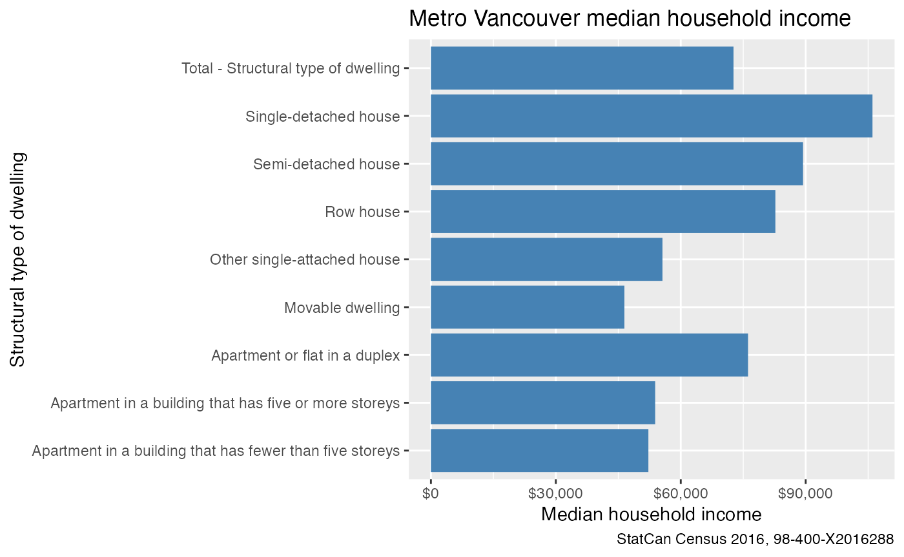

Census_xtab.RmdTo import a Statistics Canada Census cross tabulation, locate the cross tabulation you are interested in on the StatCan website and take note of the code for the table, as well as the url for the entire table download.
For example, for the cross tabulation of household income statistics by structural type of dwelling, we locate the corresponding webpage and read off the code as “98-400-X2016101”. Under the download tab we also copy the link for the entire table CSV download.
Calling the get_sqlite_xtab function with these two
arguments will then download the data on the first invocation and sort
it into an sqlite database and open a connection to that database.
code <- "98-400-X2016101"
url <- "https://www12.statcan.gc.ca/census-recensement/2016/dp-pd/dt-td/CompDataDownload.cfm?LANG=E&PID=110210&OFT=CSV"
xtab_data <- get_sqlite_xtab(code=code,url = url, cache_dir = tempdir())
#> Downloading data ...
#> Unpacking data ...
#> Importing xtab ...
#> [1] "Indexing xtab..."The data can then be accessed using the dbplyr syntax.
For example to see all the available columns we can load in the first
row (don’t forget to call collect() to execute the database
fetch) and list the column names.
xtab_data %>% head(1) %>% collect() %>% names()
#> [1] "CENSUS_YEAR"
#> [2] "GEO_CODE (POR)"
#> [3] "GEO_LEVEL"
#> [4] "GEO_NAME"
#> [5] "GNR"
#> [6] "DATA_QUALITY_FLAG"
#> [7] "ALT_GEO_CODE"
#> [8] "Structural type of dwelling"
#> [9] "Member ID: Structural type of dwelling"
#> [10] "Household type including census family structure"
#> [11] "Member ID: Household type including census family structure"
#> [12] "Dim: Household income statistics (3): Member ID: [1]: Total - Household income statistics"
#> [13] "Dim: Household income statistics (3): Member ID: [2]: Median total income of households ($)"
#> [14] "Dim: Household income statistics (3): Member ID: [3]: Median after-tax income of households ($)"If we are only interested in people residing in Metro Vancouver in 2016 and want to learn about the labour force status of movers, we can filter out the other variables in our database call and just select the ones we are interested in.
The cross tabulations posted on the Statistics Canada website tend to be relatively clean (compared to custom requests, which are usually littered with inconsistent spelling and other problems), and we can infer the names of the “Total” categories by just prepending “Total -” to the column name. In this case that works for all but one of the filtered columns, which can be a bit of a pain to chase down.
Also, we usually want to pivot the last columns from wide to long
form, the standardize_xtab function takes care of that.
vancouver_dwelling_income <- xtab_data %>%
filter(`GEO_CODE (POR)`=="933",
`Household type including census family structure` ==
"Total - Household type including census family structure") %>%
select(GeoUID=`GEO_CODE (POR)`, Name=GEO_NAME,`Structural type of dwelling`, matches("^Dim: ")) %>%
collect_and_normalize_xtab(disconnect=TRUE)
vancouver_dwelling_income
#> # A tibble: 30 × 5
#> GeoUID Name `Structural type of dwelling` House…¹ Value
#> <chr> <chr> <chr> <chr> <dbl>
#> 1 933 Vancouver Total - Structural type of dwelling Total … 960895
#> 2 933 Vancouver Single-detached house Total … 282360
#> 3 933 Vancouver Apartment in a building that has five or mor… Total … 160060
#> 4 933 Vancouver Other attached dwelling Total … 513900
#> 5 933 Vancouver Semi-detached house Total … 20530
#> 6 933 Vancouver Row house Total … 93415
#> 7 933 Vancouver Apartment or flat in a duplex Total … 156445
#> 8 933 Vancouver Apartment in a building that has fewer than … Total … 242200
#> 9 933 Vancouver Other single-attached house Total … 1310
#> 10 933 Vancouver Movable dwelling Total … 4580
#> # … with 20 more rows, and abbreviated variable name
#> # ¹`Household income statistics`
#> # ℹ Use `print(n = ...)` to see more rowsArmed with this we can look at the labour force status by Mobility status 5 years ago.
vancouver_dwelling_income %>%
filter(`Household income statistics`=="Median total income of households ($)",
`Structural type of dwelling` != "Other attached dwelling") %>%
ggplot(aes(x=`Structural type of dwelling`,y=Value)) +
geom_bar(stat="identity",fill="steelblue") +
scale_y_continuous(labels=scales::dollar) +
scale_fill_brewer(palette="Set1") +
coord_flip() +
labs(title="Metro Vancouver median household income",
y="Median household income",
caption="StatCan Census 2016, 98-400-X2016101")